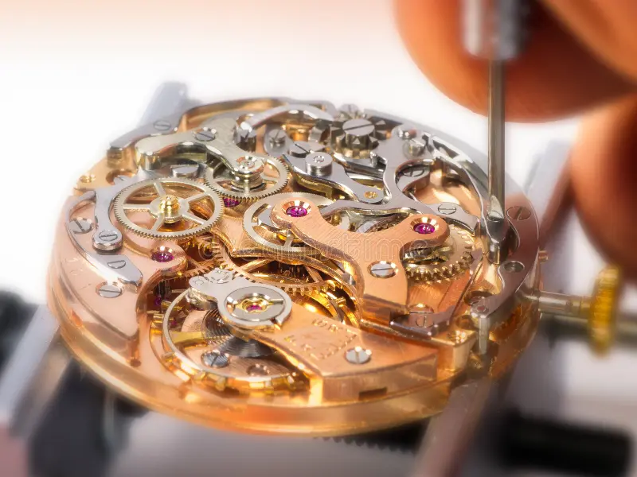
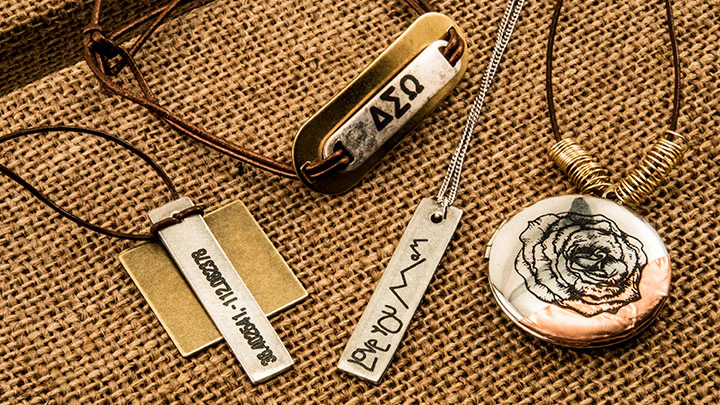
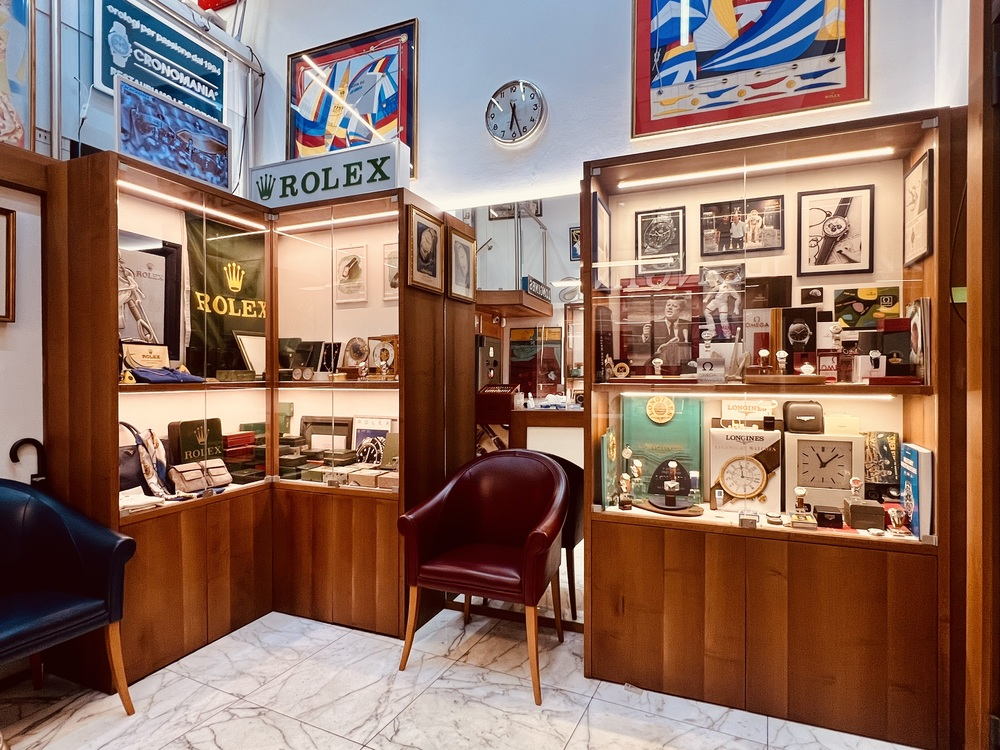

Nuestros Servicios
| Servicio | Tiempo Estimado | Rango de Precio (USD) |
|---|---|---|
| Reparación de Relojes de Pulsera | 3–7 días hábiles | $15 – $120 |
| Reparación de Relojes de Pared y Cuco | 7–15 días hábiles | $40 – $200 |
| Joyería y Engastes | 2–5 días hábiles | $10 – $80 |
| Grabado Personalizado | 1–3 días hábiles | $8 – $35 |
| Restauración de Piezas Antiguas | 15–30 días hábiles | $60 – $350 |
* Los precios son orientativos. Se entrega presupuesto sin costo previo a cualquier trabajo.
Don Ernesto y la Historia del Taller
Don Ernesto Jiménez Vargas abrió las puertas de su pequeño taller en 1974, en un local de apenas doce metros cuadrados sobre la Calle 4 de San José. Había aprendido el oficio de manos de su padre, quien a su vez lo aprendió de un relojero suizo que llegó al país en los años cuarenta. Desde el primer día, Don Ernesto entendió que reparar un reloj no es simplemente ajustar engranajes: es devolver el tiempo a las manos que lo atesoraron.
A lo largo de cinco décadas, el taller ha sobrevivido a cambios de moneda, terremotos, y la llegada del cuarzo y la era digital. Mientras otros cerraban sus puertas, Don Ernesto y su familia adaptaban, aprendían, y persistían. Hoy, sus hijos y nietos trabajan a su lado, herederos de una disciplina que exige paciencia, vista fina y manos seguras.
El taller no solo repara relojes. A través de los años, la clientela fue trayendo también piezas de joyería — anillos de bodas que necesitaban ajuste, broches de herencia que perdían su cierre, medallas de bautismo que requerían nueva cadena. Hoy, los servicios de joyería son una parte integral del negocio, siempre con el mismo cuidado artesanal que distinguió al taller desde sus inicios.
Don Ernesto cumplió 78 años el pasado febrero. Sigue llegando al taller todas las mañanas, aunque ya delega las piezas más complejas a su hijo mayor. Dice que mientras pueda sostener una lupa, seguirá trabajando. Sus clientes, muchos de ellos hijos de sus primeros clientes, lo saben bien: hay cosas que el tiempo no desgasta.
Nuestros Trabajos

Grabado en placa conmemorativa de plata
Reloj suizo de cuerda revisado y lubricado
Broche de herencia restaurado, circa 1950Horario de Atención
| Lunes | 8:00 a.m. – 5:30 p.m. |
| Martes | 8:00 a.m. – 5:30 p.m. |
| Miércoles | 8:00 a.m. – 5:30 p.m. |
| Jueves | 8:00 a.m. – 5:30 p.m. |
| Viernes | 8:00 a.m. – 5:30 p.m. |
| Sábado | 8:00 a.m. – 1:00 p.m. |
| Domingo | Cerrado |
Contacto y Consultas
Dirección:
Calle 4, Avenida 2, Barrio La Merced
San José, Costa Rica
Teléfono:
(506) 2222-1974
Correo:
donernesto@ejemplo.cr
Aceptamos piezas por valoración sin compromiso. Traiga su reloj o joya y le daremos un presupuesto gratuito.